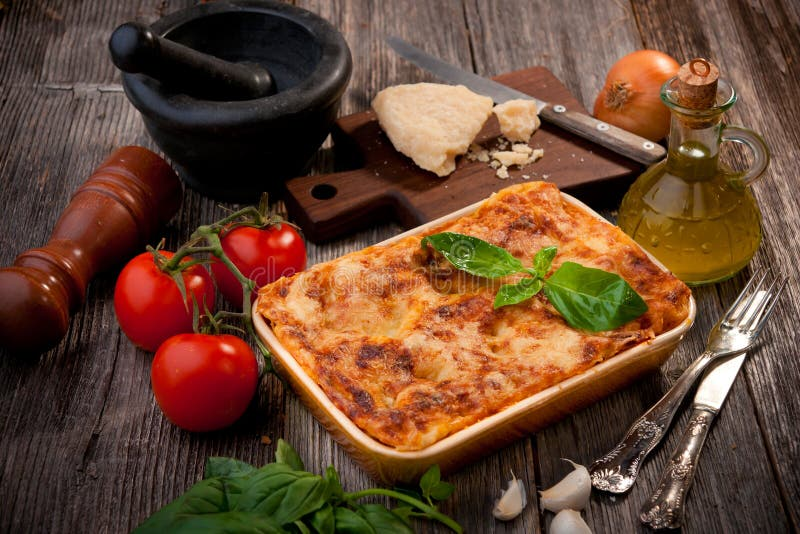

home page
lasagna

Description
A rich, comforting layered pasta bake with a hearty meat sauce, creamy
ricotta filling, and melted mozzarella and parmesan on top. Perfect for
feeding a family or a crowd.
Ingredients
- 12 lasagna noodles
- 500 grams ground beef
- 1 yellow onion, chopped
- 3 garlic cloves, minced
- 800 grams crushed tomatoes
- 2 tablespoons tomato paste
- 1 teaspoons dried oregano
- 1 teaspoons dried basil
- 1 teaspoons salt
- 0.5 teaspoons black pepper
- 450 grams ricotta cheese
- 1 large eggs
- 400 grams shredded mozzarella cheese
- 100 grams grated parmesan cheese
- 2 table spoons fresh parsley, chopped
- 1 tablespoons olive oil
Steps
-
Boil the noodles: Cook 12 lasagna noodles in salted boiling water
according to package instructions until al dante. Drain and lay flat so
they don't stick together.
-
Make the meat sauce: Heat 1 tablespoons olive oil in a large pan over
medium heat. Add 1 yellow onion, chopped and cook until soft, about 5
minutes. Add 3 garlic cloves, minced and cook 1 minute more.
-
Brown the beef: Add 500 grams ground beef to the pan and cook, breaking
it apart, until browned and no longer pink.
-
Simmer the sauce: Stir in 800 grams crushed tomatoes, 2 tablespoons
tomato paste, 1 teaspoons dried oregano, 1 teaspoons dried basil, 1
teaspoons salt, and 0.5 teaspoons black pepper. Simmer uncovered to
thicken.
-
Mix the ricotta filling: In a bowl, combine 450 grams ricotta cheese, 1
large eggs, and half of the 100 grams grated parmesan cheese. Mix well
and set aside.
- Preheat the oven: Preheat your oven to 190°C (375°F).
-
Assemble the layers: Spread a thin layer of meat sauce in a baking dish.
Layer noodles, then ricotta mixture, then meat sauce, then a sprinkle of
400 grams shredded mozzarella cheese. Repeat layers, finishing with
sauce and remaining 400 grams shredded mozzarella cheese and 100 grams
grated parmesan cheese on top.
-
Bake: Cover with foil and bake. Remove foil for the last 45 minutes so
the top turns golden and bubbly.
-
Rest and serve: Let the lasagna rest for 10 minutes before slicing.
Garnish with 2 tablespoons fresh parsley, chopped and serve.